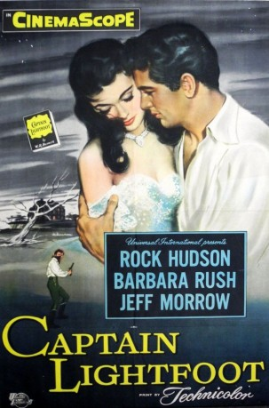

#2773 Wenn die Ketten brechen
Alternativ: Captain Lightfoot
 
 IMDB-Wertung: 6.3 / 10
IMDB-Wertung: 6.3 / 10  Metascore: 0
Metascore: 0 
Ein hitzköpfiger junger Mann steigt zum Helden der Widerstandsbewegung der Iren gegen die englische Krone auf und gewinnt die Tochter des Rebellenführers. Eine durchgehend spannende Abenteuerunterhaltung, lebendig inszeniert nach den klassischen Regeln des Genres in perfekter Farbkomposition.
Jahr: 1955
Dauer: 91 Minuten
FSK: 12
Land: USA Studio: Universal PicturesTonspuren:
Untertitel:
Auflösung: 1080p (1920x816) Größe: 6717 MB
Genre: Drama, Abenteuer, Krieg, Liebe, Geschichte
Regisseur: Douglas Sirk
Drehbuch: W.R. Burnett, Oscar Brodney, W.R. Burnett
Soundtrack: Heinz Roemheld, Herman Stein
Darsteller:
 Rock Hudson als Michael Martin
Rock Hudson als Michael Martin Barbara Rush als Aga Doherty
Barbara Rush als Aga Doherty Finlay Currie als Callahan
Finlay Currie als Callahan- Jeff Morrow als John Doherty, aka Capt. Thunderbolt
- Kathleen Ryan als Lady Anne More
- Denis O'Dea als Regis Donnell
- Geoffrey Toone als Captain Hood
- Hilton Edwards als Lord Glen
- Sheila Brennan als Waitress
- Harry Goldblatt als Brady
- Charles B. Fitzsimons als Dan Shanley
- Christopher Casson als Lord Clonmell
- Philip O'Flynn als Trim
- Shay Gorman als Tim Keenan
 Kenneth MacDonald als Desmond, High Steward
Kenneth MacDonald als Desmond, High Steward- Robert Bernal als Clagett
- Louise Studley als Cathy
- J.G. Devlin als Tuer O'Brien
- Mike Nolan als Willie the Goat
- Edward Aylward als Big Tom
- Lord Mount Charles als English Gentleman
- Lady Mount Charles als English Lady
- George Blankley als The Dragoon , uncredited
- Peter Dix als Dragoon lieutenant , uncredited
- Paul Farrell als The Magistrate , uncredited
- Nigel Fitzgerald als Sir George Bracey , uncredited
- Aiden Grennell als The Umpire , uncredited
- Edward Lexy als Army general , uncredited
- Oliver McGauley als Shamus O'Neill , uncredited
- Austin Meldon als Sir Edward Grant , uncredited
- Sean Mooney als Surgeon , uncredited
- Philomena Tubridy als Ballroom flirt , uncredited
Datei: X:\1950-1959\Wenn die Ketten brechen (1955, FSK12, 1920x816).mkv seit 14.12.2015
Festplatte: HD 1900-1970
 Es gibt insgesamt 141 Filme in der Gruppe '1950-1959'
Es gibt insgesamt 141 Filme in der Gruppe '1950-1959'